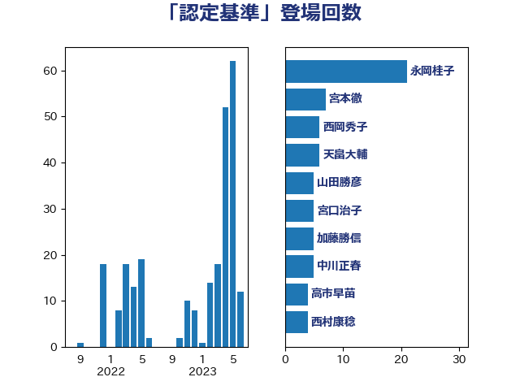

単語「認定基準」

| 永岡桂子 | 自由民主党 | 21 回 |
| 宮本徹 | 日本共産党 | 7 回 |
| 西岡秀子 | 国民民主党 | 6 回 |
| 天畠大輔 | れいわ新選組 | 6 回 |
| 山田勝彦 | 立憲民主党 | 5 回 |
| 宮口治子 | 立憲民主党 | 5 回 |
| 加藤勝信 | 自由民主党 | 5 回 |
| 中川正春 | 立憲民主党 | 5 回 |
| 高市早苗 | 自由民主党 | 4 回 |
| 西村康稔 | 自由民主党 | 4 回 |
| 萩生田光一 | 自由民主党 | 4 回 |
| 石原宏高 | 自由民主党 | 4 回 |
| 池下卓 | 日本維新の会 | 4 回 |
| 高橋千鶴子 | 日本共産党 | 3 回 |
| 本庄知史 | 立憲民主党 | 3 回 |
| 後藤茂之 | 自由民主党 | 3 回 |
| 川合孝典 | 国民民主党 | 3 回 |
| 岡田直樹 | 自由民主党 | 3 回 |
| 大石あきこ | れいわ新選組 | 3 回 |
| 吉良よし子 | 日本共産党 | 3 回 |
| 齋藤健 | 自由民主党 | 2 回 |
| 青柳陽一郎 | 立憲民主党 | 2 回 |
| 田村まみ | 国民民主党 | 2 回 |
| 川田龍平 | 立憲民主党 | 2 回 |
| 宮崎勝 | 公明党 | 2 回 |
| 塩川鉄也 | 日本共産党 | 2 回 |
| 古賀千景 | 立憲民主党 | 2 回 |
| 井上哲士 | 日本共産党 | 2 回 |
| 串田誠一 | 日本維新の会 | 2 回 |
| 高見康裕 | 自由民主党 | 1 回 |
| 高橋英明 | 日本維新の会 | 1 回 |
| 音喜多駿 | 日本維新の会 | 1 回 |
| 階猛 | 立憲民主党 | 1 回 |
| 阿部司 | 日本維新の会 | 1 回 |
| 鎌田さゆり | 立憲民主党 | 1 回 |
| 鈴木貴子 | 自由民主党 | 1 回 |
| 金城泰邦 | 公明党 | 1 回 |
| 葉梨康弘 | 自由民主党 | 1 回 |
| 落合貴之 | 立憲民主党 | 1 回 |
| 菊田真紀子 | 立憲民主党 | 1 回 |
| 福島伸享 | 無所属 | 1 回 |
| 石橋通宏 | 立憲民主党 | 1 回 |
| 石垣のりこ | 立憲民主党 | 1 回 |
| 牧山ひろえ | 立憲民主党 | 1 回 |
| 牧原秀樹 | 自由民主党 | 1 回 |
| 熊谷裕人 | 立憲民主党 | 1 回 |
| 浅野哲 | 国民民主党 | 1 回 |
| 河野義博 | 公明党 | 1 回 |
| 森山浩行 | 立憲民主党 | 1 回 |
| 柚木道義 | 立憲民主党 | 1 回 |
| 村田享子 | 立憲民主党 | 1 回 |
| 杉尾秀哉 | 立憲民主党 | 1 回 |
| 日下正喜 | 公明党 | 1 回 |
| 斉藤鉄夫 | 公明党 | 1 回 |
| 掘井健智 | 日本維新の会 | 1 回 |
| 川崎ひでと | 自由民主党 | 1 回 |
| 岩渕友 | 日本共産党 | 1 回 |
| 山際大志郎 | 自由民主党 | 1 回 |
| 小野泰輔 | 日本維新の会 | 1 回 |
| 寺田学 | 立憲民主党 | 1 回 |
| 宮本周司 | 自由民主党 | 1 回 |
| 大島敦 | 立憲民主党 | 1 回 |
| 堀場幸子 | 日本維新の会 | 1 回 |
| 堀内詔子 | 自由民主党 | 1 回 |
| 古川禎久 | 自由民主党 | 1 回 |
| 倉林明子 | 日本共産党 | 1 回 |
| 伊藤孝恵 | 国民民主党 | 1 回 |
| 中島克仁 | 立憲民主党 | 1 回 |
| 下野六太 | 公明党 | 1 回 |
| 三上えり | 立憲民主党 | 1 回 |
| おおつき紅葉 | 立憲民主党 | 1 回 |